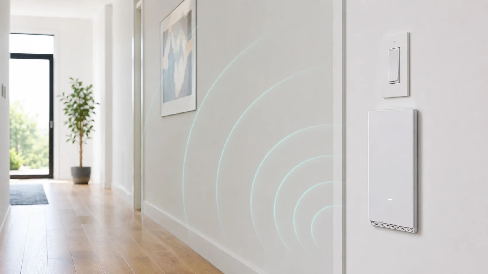
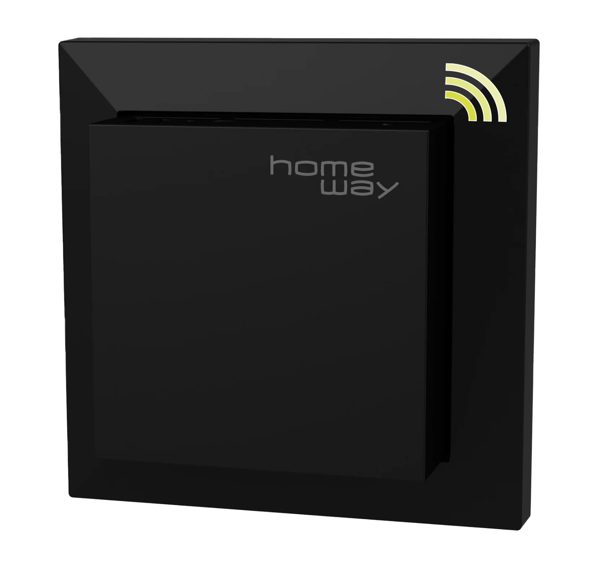

Unauffällig im Wohnbereich
Die richtige Position ist wichtiger als möglichst viele Geräte.
PoE · Decke · Wand · Unterputz
Access Points bringen WLAN dorthin, wo es gebraucht wird. Beratung & Technik plant Standorte, PoE, Switch, WLAN-Konfiguration und Übergabe.
Ein Access Point wird idealerweise per LAN-Kabel versorgt. Dadurch ist das WLAN stabiler und besser planbar als bei Funk-Repeatern.
Für Stockwerke, Homeoffice, Wohnzimmer, Garten oder Garage.
Strom und Daten über ein Netzwerkkabel, wenn Switch und AP dafür geeignet sind.
homeway oder Ubiquiti UniFi passend zu Paket, Objekt und gewünschter Verwaltung.
WLAN-Name, Passwort, Gäste-WLAN und Roaming-Einstellungen.

Die richtige Position ist wichtiger als möglichst viele Geräte.

HomeWay kann je nach Bestand und Designanspruch eine passende Option sein.
Wir klären kostenlos, ob einzelne Access Points oder eine umfassendere WLAN-Planung sinnvoll sind.
WLAN kostenlos einschätzen lassen